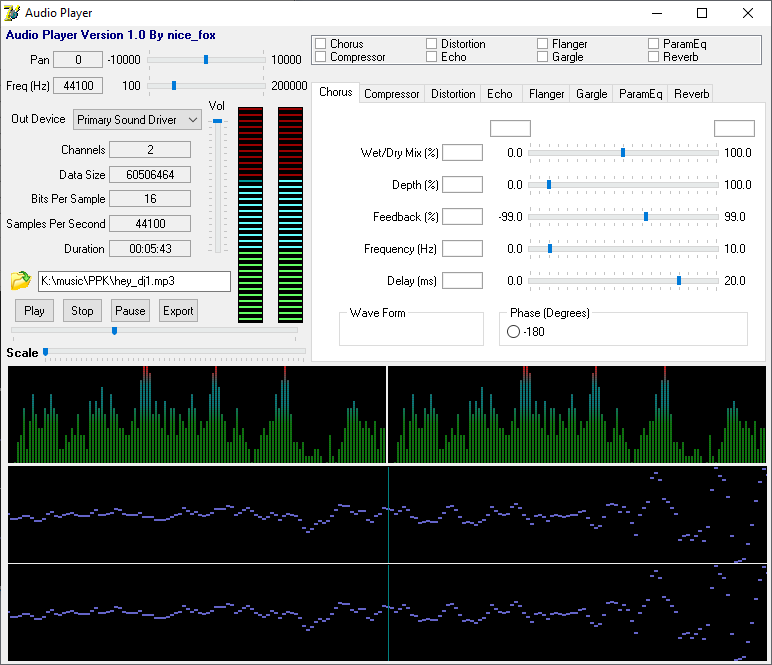

Playback & effects
DirectSound playback with volume, pan, frequency, position control, and classic audio effects.
Delphi · Win32 · DirectSound
A preserved and modernized Delphi player with DirectSound effects, DirectShow decoding, waveform rendering, FFT spectrum analysis, and LED-style VU meters.

Inside the player
DirectSound playback with volume, pan, frequency, position control, and classic audio effects.
Waveform displays, in-project FFT spectrum analysis, and responsive LED-style level meters.
MP3 and WAV input through Windows DirectShow and Sample Grabber, without a bundled codec library.
More than play and stop
The project decodes audio to PCM, fills a DirectSound buffer, and turns the same sample data into useful visual feedback. It stays compact enough to study without hiding the interesting parts behind a large framework.
Source included
Open DSTest.dpr in Delphi 7 or modern RAD Studio and target Win32. DirectX Pascal headers are included for Delphi 7 compatibility.
MP3 decoding depends on the DirectShow filters installed on Windows. The player keeps decoded audio in memory, so short tracks are the best fit for this educational design.
audio-player-delphi-source/
├── DSTest.dpr
├── MainUnit.pas
├── AudioReader.pas
├── SimpleFFT.pas
└── DirectX9/